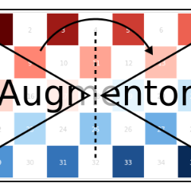

CropRatio: Crop centered window
Augmentor.CropRatio — Type.CropRatio <: Augmentor.ImageOperationDescription
Crops out the biggest area around the center of the given image such that the output image satisfies the specified aspect ratio (i.e. width divided by height).
For example the operation CropRatio(1) would denote a crop for the biggest square around the center of the image.
For randomly placed crops take a look at RCropRatio.
Usage
CropRatio(ratio)
CropRatio(; ratio = 1)Arguments
ratio::Number: Optional. A number denoting the aspect ratio. For example specifyingratio=16/9would denote a 16:9 aspect ratio. Defaults to1, which describes a square crop.
See also
RCropRatio, CropSize, Crop, CropNative, augment
Examples
using Augmentor
img = testpattern()
# crop biggest square around the image center
augment(img, CropRatio(1))| Input | Output for CropRatio(1) |
|---|---|
 |  |